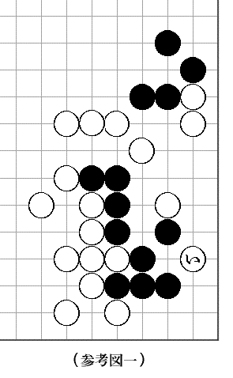

朝日新聞の八段位獲得戦木谷七段対久保松六段の対局で呉七段の解説。参考図一で黒が手を抜いて「い」と打たれても生きがあるといふのである。即ち参考図二白七までゞ目を欠きにきても、次に黒ろと打つ手筋によつて黒に渡りがあるといふ。
娯楽機関の何一つない田舎では、新聞を読むのが最大の娯楽である。僕はラヂオを聴かないが、毎日ラヂオを読むのである。活動写真も音楽も読むのである。料理も薬も読む。
そのうちでも碁の欄は一日の退屈の時間だけ睨みつゞけてゐる。で、早速睨みはじめたが、渡りの手が見付からない。
黒ろの時白は十一黒ろ十二白い十二黒に十一と切つて次に白に十三ときてくれると都合が良いが、ほ十二につがれると、それまでゞある。
たうとう一日考へたが分らない。翌日目が覚めると考へはじめて、この日もたうとう分らない。翌日目が覚めると又考へはじめたので、これは容易ならん大事であると気が付いた。差当つて仕事ができないし、やがて幻に
そこで朝日新聞社へ渡りの手順を解説してくれと葉書をだした。ホッとした。ところが
これは危険だと気が付いたから、早速岡田東魚初段のところへ大至急御教示にあづかりたいと手紙をだしてやれ安心と思つたが、熟々考へてみると、これ又返事がくる迄には三日かゝるのである。もはや一命おぼつかないから、僕はガバとはね起きて、汽車に乗り、まつしぐらに東京へ着いた。
本郷の富岡へ行つた。この碁会所はアマチュアの大関格が沢山集つてゐるのである。生憎大関が居なかつたから、居合した帝大の選手連中に解答をもとめた。この連中は碁打のアカデミシアンで呉七段だの秀策を科学的に信頼してゐる。だから隠れた粋な手筋がある筈だと面々汗だくで唸りだしたが駄目なのである。
で、今度はアテネ・フランセへ電話をかけた。仏蘭西の学校へ何用でとお考へかも知れないが、近頃、碁の用はこの学校が間に合ふのである。即ち、野上二段、岡田初段が駈けつけてきたではないか。手品のやうな学校であります。
そこで結局どういふ事になつたかといふと野上岡田三段（合せて）も渡りの筋を見付けることが出来なかつた。呉七段の読違ひといふ結論に達し、僕は一命を拾つたばかりでなく軍歌を歌つて我家へ帰つた。
途中、上野は砂子屋へ立寄り尾崎一雄大人を吃驚させて益々快的に帰宅しようかと思つたが、やめた。といふのは、囲碁春秋には鉢巻の大人も随筆を書くさうだから、大人は随筆の名人だが、棋譜入りの随筆は書けないに極つてゐて、その時全く落胆し、垂涎するに極つてゐるからであつた。

（参考図一）

（参考図二）